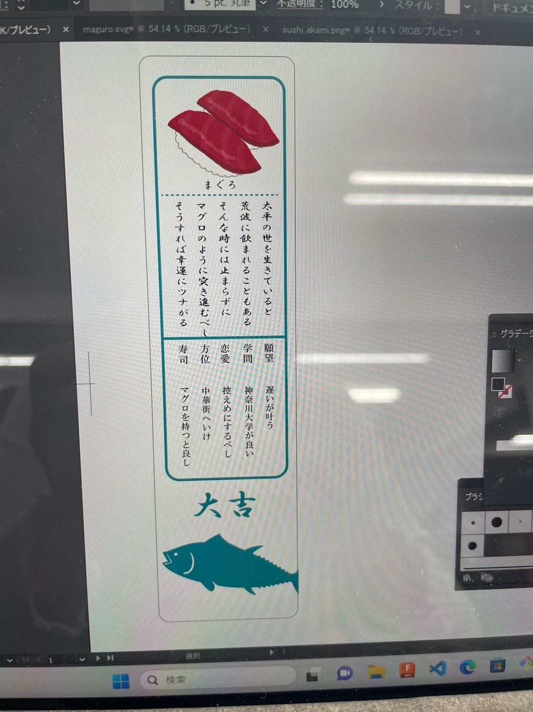

こんにちはreiです。
前回告知した通り、10月28日（土）、29日（日）に神奈川大学みなとみらいキャンパスで開催される、「みなとみらい祭」で道用ゼミとして、ぷら寿司を出品します。（
みなとみらい祭ホームページ）
今回はその「みなとみらい祭」での出店のための準備風景を書いていきたいと思います。
みなとみらい祭に向けた計画（変更点）
販売するもの（修正前）
合計100個
販売するもの（修正後）
- 寿司キーホルダー 100個
- 寿司おみくじ 24種類
製作風景
改良ポイント1 ネタの研磨
前回はレーザーカットしたアクリル板をそのまま染色し、作成していましたが、今回はバレル研磨機を使用し、カットしたアクリル板を研磨しました。

レーザーカットの様子
このバレル研磨機に入れて２４時間以上研磨すると...
ネタが研磨されて白くなります！（これでイカも作れる！）
改良ポイント2 シャリの出力
前回までのシャリは3Dプリンタでシャリの形をデザインし、出力するだけでありましたが、今回はよりシャリっぽくするために、デザイン段階での出力方法を変え、シャリ用のフィラメント（3Dプリンタの元的なもの）を購入しました!
前回のシャリ
今回のシャリ
前回よりもボツボツしたシャリになりました(^^)
改良ポイント3 寿司おみくじ
前回までは寿司スタンプを販売する予定でしたが、おみくじに変更となりました。内容は回転寿司の裏に番号が印刷されており、その番号のおみくじを渡すと、お寿司に纏わる良いお言葉が書いてあります!
試運転の様子

お皿も作成しました。

おみくじの試作品
24種類あり、当たりが出ると小さいサイズの寿司キーホルダー（レア）をプレゼントするので是非!
ポスター
ついにポスターが完成しました!
たくさん印刷してありますのでこれから配布しようと思ってます^^
【次回】みなとみらい祭当日の様子!？ ぷら寿司は売れたのか？
お楽しみに。